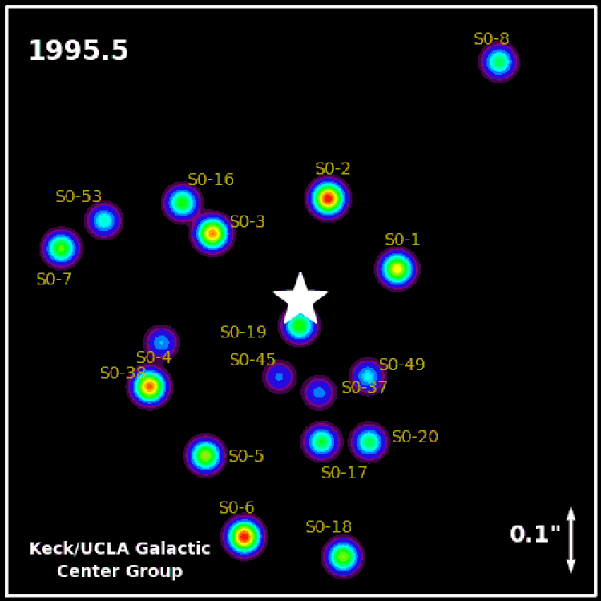

Обнаружение чёрных дыр
На данный момент учёными обнаружено около тысячи объектов во Вселенной, которые причисляются к чёрным дырам. Всего же, предполагают учёные, существуют десятки миллионов таких объектов.
В настоящее время единственный достоверный способ отличить чёрную дыру от объекта другого типа состоит в том, чтобы измерить массу и размеры объекта и сравнить его радиус с гравитационным радиусом (радиусом Шварцшильда), который задаётся формулой: , где: — гравитационная постоянная, — масса объекта, — скорость света.
| Радиусы Шварцшильда для различных объектов | |||
| Объект | Масса (кг) | Радиус Шварцшильда, R (м) | Плотность сколлапсировавшего вещества при сжатии его до сферы радиуса Шварцшильда (кг/м3) |
| Небольшая гора | 10^12 | 10^(-15) | 10^56 |
| Небольшой астероид | 10^18 | 10^(-9) | 10^44 |
| Земля | 6*10^24 | 10^(-2) | 10^30 |
| Солнце | 2*10^30 = 1 М | 3*10^3 | 10^19 |
| Массивная звезда | 10 М | 3*10^4 | 10^17 |
| Сколлапсировавшая масса, возможно содержащаяся в активном ядре галактики | 10^8 М | 3*10^11 | 10^3 (плотность воды) |
| Галактика в целом | 10^11 М | 0,03 св. года | 10^(-3) |
| Значения радиуса R и плотности приблизительны, в последнем случае округлены до ближайшей степени 10. | |||
Обнаружение сверхмассивных чёрных дыр
Наиболее надёжными считаются свидетельства о существовании сверхмассивных чёрных дыр в центральных областях галактик. Сегодня разрешающая способность телескопов недостаточна для того, чтобы различать области пространства размером порядка гравитационного радиуса чёрной дыры (помимо чёрной дыры в центре нашей Галактики, которая наблюдается методами радиоинтерферометрии со сверхдлинной базой на пределе их разрешающей способности). Поэтому в идентификации центральных объектов галактик как чёрных дыр есть определённая степень допущения (кроме центра нашей Галактики). Считается, что установленный верхний предел размеров этих объектов недостаточен, чтобы рассматривать их как скопления белых или коричневых карликов, нейтронных звёзд или даже чёрных дыр обычной массы.
Существует множество способов определить массу и ориентировочные размеры сверхмассивного тела, однако большинство из них основано на измерении характеристик орбит вращающихся вокруг них объектов (звёзд, радиоисточников, газовых дисков). В простейшем и достаточно часто встречающемся случае обращение происходит по кеплеровским орбитам, о чём говорит пропорциональность скорости вращения спутника квадратному корню из большой полуоси орбиты: . В этом случае масса центрального тела находится по известной формуле: .
В ряде случаев, когда объекты-спутники представляют собой сплошную среду (газовый диск, плотное звёздное скопление), которая своим тяготением влияет на характеристики орбиты, радиальное распределение массы в ядре галактики получается путём решения т. н. бесстолкновительного уравнения Больцмана.
Непосредственные измерения размеров источников излучения
Если радиоисточник Стрелец A* находится около горизонта событий чёрной дыры, он будет выглядеть как пятно, размазанное и усиленное гравитационным линзированием. Поэтому, если источник находится вблизи от горизонта событий и покрывает всю дыру, его размер должен быть не меньше 5,2 радиуса Шварцшильда, что для объекта в центре нашей Галактики даёт угловой размер примерно в 52 микросекунды дуги. Это даже несколько больше наблюдаемого в 1,3 мм радиоволнах размера в  микросекунд, что показывает, что излучение не исходит с поверхности всей дыры, но сосредоточено в области рядом с ней, возможно, на краю аккреционного диска или в релятивистской струе материала, выброшенного из этого диска.
микросекунд, что показывает, что излучение не исходит с поверхности всей дыры, но сосредоточено в области рядом с ней, возможно, на краю аккреционного диска или в релятивистской струе материала, выброшенного из этого диска.
Метод отношения масса-светимость
Основным методом поиска сверхмассивных чёрных дыр в настоящее время является исследование распределения яркости и скорости движения звёзд в зависимости от расстояния до центра Галактики. Распределение яркости снимается фотометрическими методами при фотографировании галактик с большим разрешением, скорости звёзд — по красному смещению и уширению линий поглощения в спектре звезды.
Имея распределение скорости звёзд можно найти радиальное распределение масс в галактике. Например, при эллиптической симметрии поля скоростей решение уравнения Больцмана даёт следующий результат: , где — скорость вращения,  , и — радиальная и азимутальные проекции дисперсии скорости, — гравитационная постоянная, — плотность звёздного вещества, которая обычно принимается пропорциональной светимости.
, и — радиальная и азимутальные проекции дисперсии скорости, — гравитационная постоянная, — плотность звёздного вещества, которая обычно принимается пропорциональной светимости.
Поскольку чёрная дыра имеет большую массу при низкой светимости, одним из признаков наличия в центре галактики сверхмассивной чёрной дыры может служить высокое отношение массы к светимости для ядра галактики. Плотное скопление обычных звёзд имеет отношение порядка единицы (масса и светимость выражаются в массах и светимостях солнца), поэтому значения (для некоторых галактик , являются признаком наличия сверхмассивной чёрной дыры. Возможны, однако, альтернативные объяснения этого феномена: скопления белых или коричневых карликов, нейтронных звёзд, чёрных дыр обычной массы.
Измерение скорости вращения газа
В последнее время благодаря повышению разрешающей способности телескопов стало возможным наблюдать и измерять скорости движения отдельных объектов в непосредственной близости от центра галактик. Так, при помощи спектрографа FOS (Faint Object Spectrograph) космического телескопа «Хаббл» группой под руководством Х. Форда была обнаружена вращающаяся газовая структура в центре галактики M87. Скорость вращения газа на расстоянии около 60 св. лет от центра галактики составила 550 км/с, что соответствует кеплеровской орбите с массой центрального тела порядка 3*10^9 масс солнца. Несмотря на гигантскую массу центрального объекта, нельзя сказать с полной определённостью, что он является чёрной дырой, поскольку гравитационный радиус такой чёрной дыры составляет около 0,001 св. года.
Измерение скорости микроволновых источников
В 1995 г. группа под руководством Дж. Морана наблюдала точечные микроволновые источники, вращающиеся в непосредственной близости от центра галактики NGС 4258. Наблюдения проводились при помощи радиоинтерферометра, включавшего сеть наземных радиотелескопов, что позволило наблюдать центр галактики с угловым разрешением 0",001. Всего было обнаружено 17 компактных источников, расположенных в дискообразной структуре радиусом около 10 св. лет. Источники вращались в соответствии с кеплеровским законом (скорость вращения обратно пропорциональна квадратному корню из расстояния), откуда масса центрального объекта была оценена как 4*10^7 масс солнца, а верхний предел радиуса ядра — 0,04 св. года.
Наблюдение траекторий отдельных звёзд
 В 1993—1996 годах А. Экарт и Р. Генцель наблюдали движение отдельных звёзд в окрестностях центра нашей Галактики[79]. Наблюдения проводились в инфракрасных лучах, для которых слой космической пыли вблизи ядра галактики не является препятствием. В результате удалось точно измерить параметры движения 39 звёзд, находящихся на расстоянии от 0,13 до 1,3 св. года от центра Галактики. Было установлено, что движение звёзд соответствует кеплеровскому, центральное тело массой 2,5*10^6 масс солнца и радиусом не более 0,05 св. года соответствует положению компактного радиоисточника Стрелец-А (Sgr A).
В 1991 году вступил в строй инфракрасный матричный детектор SHARP I на 3,5-метровом телескопе Европейской южной обсерватории (ESO) в Ла-Силла (Чили). Камера диапазона 1—2,5 мкм обеспечивала разрешение 50 угловых мкс на 1 пиксель матрицы. Кроме того, был установлен 3D-спектрометр на 2,2-метровом телескопе той же обсерватории.
С появлением инфракрасных детекторов высокого разрешения стало возможным наблюдать в центральных областях галактики отдельные звёзды. Изучение их спектральных характеристик показало, что большинство из них относятся к молодым звёздам возрастом несколько миллионов лет. Вопреки ранее принятым взглядам, было установлено, что в окрестностях сверхмассивной чёрной дыры активно идёт процесс звездообразования. Полагают, что источником газа для этого процесса являются два плоских аккреционных газовых кольца, обнаруженных в центре Галактики в 1980-х годах. Однако внутренний диаметр этих колец слишком велик, чтобы объяснить процесс звездообразования в непосредственной близости от чёрной дыры. Звёзды, находящиеся в радиусе 1" от чёрной дыры (так называемые «S-звёзды») имеют случайное направление орбитальных моментов, что противоречит аккреционному сценарию их возникновения. Предполагается, что это горячие ядра красных гигантов, которые образовались в отдалённых районах галактики, а затем мигрировали в центральную зону, где их внешние оболочки были сорваны приливными силами чёрной дыры.
К 1996 году были известны более 600 звёзд в области диаметром около парсека (25") вокруг радиоисточника Стрелец А*, а для 220 из них были надёжно определены радиальные скорости. Оценка массы центрального тела составляла 2—3⋅106 масс Солнца, радиуса — 0,2 св. года.
В настоящее время (октябрь 2009 года) разрешающая способность инфракрасных детекторов достигла 0,0003" (что на расстоянии 8 кпс соответствует 2,5 а. е.). Число звёзд в пределах 1 пс от центра галактики, для которых измерены параметры движения, превысило 6000.
Рассчитаны точные орбиты для ближайших к центру галактики 28 звёзд, наиболее интересной среди которых является звезда S2. За время наблюдений (1992—2007), она сделала полный оборот вокруг чёрной дыры, что позволило с большой точностью оценить параметры её орбиты. Период обращения S2 составляет 15,8 ± 0,11 года, большая полуось орбиты 0,123" ± 0,001 (1000 а. е.), эксцентриситет 0,880 ± 0,003, максимальное приближение к центральному телу 0,"015 или 120 а. е.[82]. Точное измерение параметров орбиты S2, которая оказалась близкой к кеплеровской, позволила с высокой точностью оценить массу центрального тела. По последним оценкам, она равна: , где ошибка 0,06 вызвана погрешностью измерения параметров орбиты звезды S2, а ошибка 0,36 — погрешностью измерения расстояния от Солнца до центра Галактики. Наиболее точные современные оценки расстояния до центра галактики дают: Пересчёт массы центрального тела при изменении оценки расстояния производится по формуле:
Гравитационный радиус чёрной дыры массой 4*10^6 масс солнца составляет примерно 12 млн км или 0,08 а. е., то есть, в 1400 раз меньше, чем ближайшее расстояние, на которое подходила к центральному телу звезда S2. Однако среди исследователей практически нет сомнений, что центральный объект не является скоплением звёзд малой светимости, нейтронных звёзд или чёрных дыр, поскольку сконцентрированные в таком малом объёме они неизбежно бы слились за короткое время в единый сверхмассивный объект, который, согласно ОТО, не может быть ничем иным, кроме чёрной дыры.
Наблюдение процессов приливного разрушения звезд
Во время падения звезды в чёрную дыру образуется аккреционный диск, по которому можно обнаружить процесс приливного разрушения звезды в виде краткой и яркой вспышки излучения.
Первая фотография чёрной дыры
10 апреля 2019 года Национальный научный фонд США впервые показал «фотографию» сверхмассивной черной дыры в центре галактики Messier 87, расположенной на расстоянии 54 миллионов световых лет от Земли. Изображение получили благодаря проекту Event Horizon Telescope, который включает в себя восемь радиотелескопов, расположенных по всему земному шару. «Полученная картинка подтверждает существование горизонта событий, то есть подтверждает правильность общей теории относительности Эйнштейна», — заявил один из руководителей проекта Event Horizon Telescop Лучано Реццола.